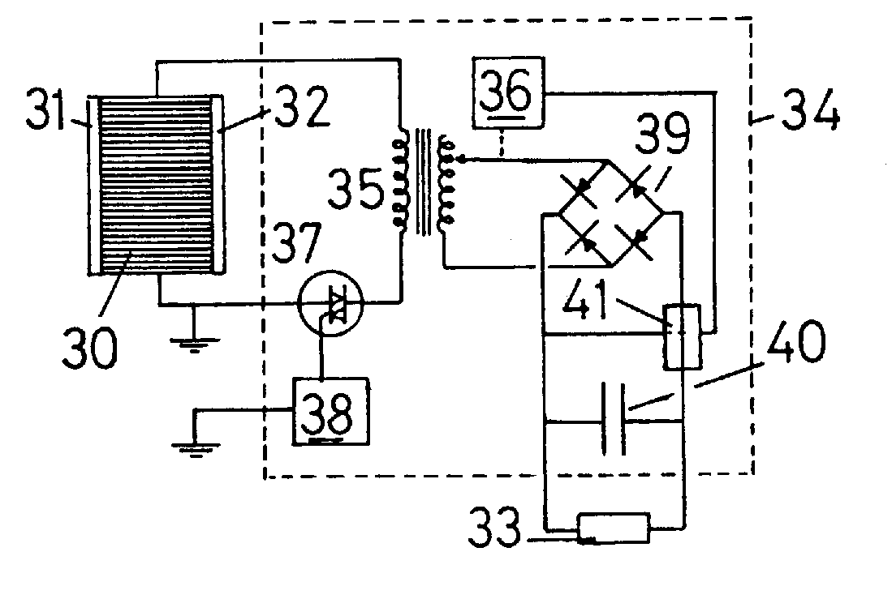

The following is a U.K. Patent granted to Harold Aspden on July 29 1992 with a first publication date of August 8 1990. Co-inventor John Scott Strachan.
Abstract: A thermopile 30 comprises a stacked assembly of bimetallic layers in which there is full conductor interface contact over the distance separating hot and cold surfaces 31,32. The assembly may include dielectric layers forming a capacitor stack. A.C. current through the stack is matched in strength to the Seebeck-generated thermoelectric current circulating in each bimetallic layer. The resulting current snakes through the stack to cause Peltier cooling at one heat surface and heating at the other. A.C. operation at a kilocycle frequency enhances the energy conversion efficiency as does heat flow parallel with the junction interface.
This is a counterpart of U.S. Patent No. 5,288,336.
